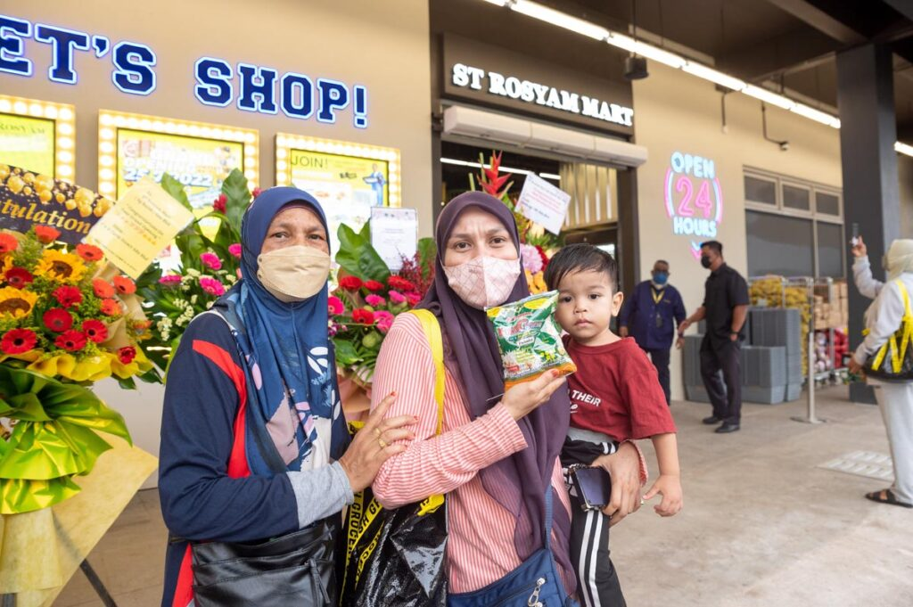

The Food Packet Campaign is a charitable initiative established to assist those struggling to secure daily food necessities. The campaign operates by preparing various types of food packages tailored to the specific circumstances and needs of different recipient groups. Through the provision of options such as Basic, Family, Premium, and Charity food packets, aid can be systematically distributed to single individuals, small families, average-sized households, and the underprivileged. Key activities of the campaign include collecting public donations, sourcing essential items, assembling comprehensive food packages, and distributing the aid to those in need. Each food packet is selected based on the recipient's requirements to ensure the assistance provided is effective and truly beneficial. The primary objectives of the Food Packet Campaign are to alleviate the financial burden on the less fortunate, ensure access to sufficient basic food, and raise public awareness regarding the importance of helping those in need. Furthermore, the campaign aims to foster values of compassion, cooperation, and community spirit by encouraging the sharing of resources with the less fortunate.